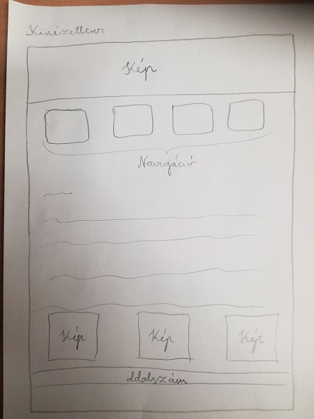

Leírás
Sok weblapszerkesztő feladatsort megcsináltam a középszintű informatika érettségimre, ezért egy azokhoz hasonló elrendezésben gondolkoztam. Kezdeti grafikai tervem nem volt, a teamsben található videók anyagait próbálgattam és ami jól nézett ki az maradt a honlapon.

Nehézségek:
A képet ezen az oldalon nem sikerült középre igazítani.
Források:
- w3schools
- Teamsben található videók
- You Tube: Webdesign tanfolyam: HTML + CSS alapoktól a felső szintig